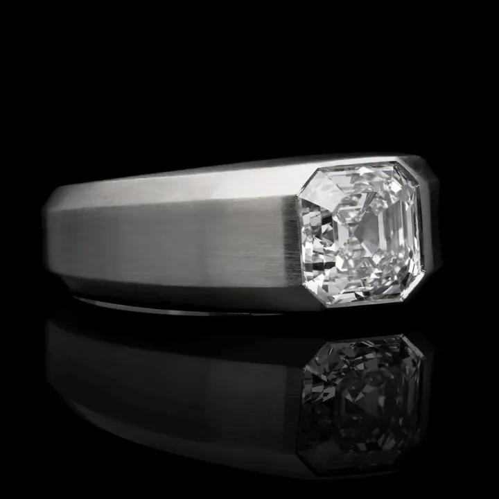
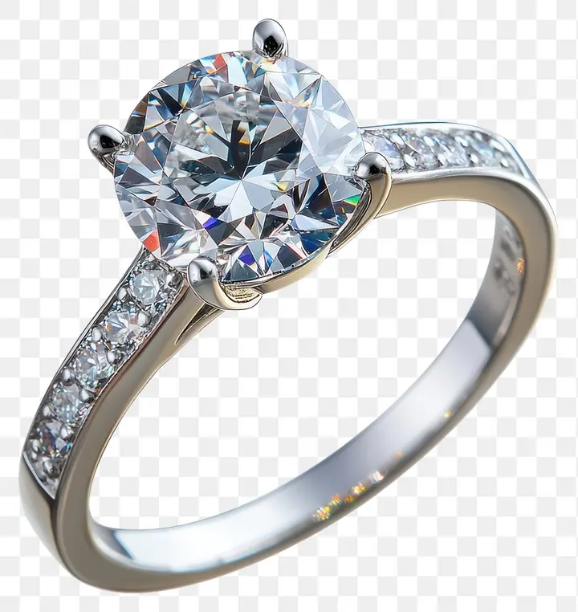

莫桑石 vs 鑽石：火光更強卻便宜百倍的對手
有一顆寶石，折射率比鑽石高、火光比鑽石猛、價格卻不到鑽石的百分之一——它叫莫桑石，鑽石最難纏的對手。


核心定義
莫桑石（moissanite）的主角是碳化矽（SiC）。它在自然界極其罕見——最早發現於隕石坑與地幔包體，1893 年由諾貝爾獎得主 Henri Moissan 在研究隕石時發現，因此得名。今日市面上的莫桑石幾乎全是實驗室培育的碳化矽晶體，技術成熟後價格大幅下降。
莫桑石的關鍵數據幾乎全面「碾壓」鑽石：折射率 2.65～2.69（鑽石 2.42）、色散 0.104（鑽石 0.044）、硬度 9.25（鑽石 10）。這代表它的火光（彩虹色散）比鑽石強烈得多，某些光源下甚至「閃」過鑽石。
特徵與分類
| 項目 | 莫桑石 | 鑽石 |
|---|---|---|
| 化學成分 | 碳化矽 SiC | 純碳 C |
| 折射率 | 2.65–2.69 | 2.417 |
| 色散（火光） | 0.104 | 0.044 |
| 硬度（摩氏） | 9.25 | 10 |
| 雙折射 | 強（0.043） | 無（等軸晶系） |
| 價格（約略） | 鑽石的 1% 上下 | 基準 |
| 導熱性 | 高 | 極高 |
莫桑石多為無色或近無色，近年培育技術提升後，顏色已能逼近 D～F 等級；但它常帶有一絲輕微的黃綠或灰色調，且高色散讓它在強光下「彩虹感」過強，這是與鑽石氣質最大的差異。
科學原理
莫桑石的雙折射（birefringence）是它的「身份破綻」：光進入碳化矽後會分裂成兩道，速度不同、方向不同，於是在放大鏡下，刻面稜線與腰圍會出現「重影」（doubling）——同樣的破綻也見於鋯石等雙折射寶石。鑽石是等軸晶系（cubic），光在其中只有單一折射，絕對不會重影。
導熱性方面，莫桑石與鑽石都是良導體，所以傳統熱導儀（鑽石測試筆）會把莫桑石「誤判」為鑽石——這是它最難纏的地方，也是鑑定者必須改用導電性測試的原因。
鑑定與鑑別方法
- 十倍放大鏡下檢查刻面稜線是否「重影」（雙折射）
- 用導電測試儀：莫桑石有微弱導電性，天然鑽石絕緣（藍鑽除外）
- 觀察火光：莫桑石色散過強，彩虹閃爍比鑽石更密集
- 檢查顏色：多數莫桑石帶輕微灰綠/黃調
- 若仍存疑，送實驗室測紅外光譜（SiC 有特徵吸收峰）
市場行情與保養建議
莫桑石是「替代鑽石」市場的主力，價格親民（一克拉級別常見售價僅數百至數千元等級），且無倫理爭議。作為日常配戴的閃亮寶石，它的性價比無可挑剔；但如果你在意「身份敘事」、保值與轉手，鑽石仍是不同賽道的商品。
買莫桑石要注意分級系統混亂、部分商家以莫桑石冒充鑽石販售的騙局——便宜歸便宜，誠實標示才是重點。
常見誤區
它是成分完全不同（碳化矽）的真實礦物/實驗室晶體，不是鑽石的仿冒品，而是獨立的寶石。把莫桑石當「假鑽」賣是欺騙，但把它當成自己的寶石戴，完全合法合理。
正好相反。莫桑石導熱性接近鑽石，多數熱導儀會把莫桑石判為「鑽石」。鑑定莫桑石要靠雙折射重影與導電性測試，而不是那支小筆。
冷知識
1893 年 Moissan 在亞利桑那隕石坑的碎片中發現天然碳化矽。宇宙級的原料，如今在實驗室被量產成平價寶石，堪稱「星塵變現」。
色散 0.104 是鑽石 0.044 的兩倍多，所以莫桑石在餐廳燭光、舞台燈下會噴出更密集的彩虹。很多人第一眼覺得它「比鑽石還閃」，其實是火光過盛。
反直覺觀點
折射率更高、色散更強、硬度僅次於鑽石——論「閃」，莫桑石在數據上不輸甚至勝出。它便宜是因為可量產，而不是因為「比較差」；鑽石的價值，很大一部分來自稀有性與文化定價。
寶石美學講究均衡。莫桑石色散過高，在強光下彩虹斑駁、失之輕浮，行家反而覺得它「太吵」。有些戴慣鑽石的人，會嫌莫桑石不夠內斂——性能過剩，也是一種風格問題。